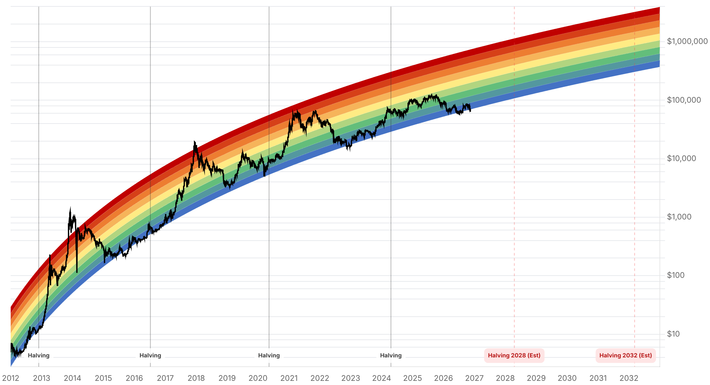

Reporte financiero
BTC cotiza en vivo a USD 64.436,59 (07:14 UTC), +0,49% vs. el cierre previo de USD 64.119,78 -un rebote intradía leve, pero que no revierte la tendencia semanal: desde el precio en vivo de ayer (USD 67.338,10) el precio cayó otro ~4,3% antes de estabilizarse, y en la semana acumula una caída de USD 75.223,15 (9-nov) a USD 64.436,59 hoy, un -14,3%, más pronunciada que el -9,7% ya reportado ayer. El Fear & Greed Index marcó un nuevo mínimo de esta serie de seguimiento diario: 10 ('Extreme Fear'), bajando de 13 ayer. La novedad verificada principal desde el reporte de ayer es la confirmación de los flujos de ETFs de bitcoin que quedaban pendientes: tftc.io ya publicó los datos del 12 de noviembre (-USD 284,0M netos, liderado por IBIT con -USD 203,8M) y del 13 de noviembre (-USD 185,5M netos, IBIT -USD 143,5M), extendiendo la racha de salidas ya reportada hasta el 11-nov (-USD 299,9M) a al menos diez sesiones consecutivas -no hay dato del 14 de noviembre porque ese día es sábado y los ETFs estadounidenses no cotizan, no por un rezago de la fuente como se reportó ayer y antier-. Sobre Nvidia/Jensen Huang: no se encontró ninguna novedad verificable desde el reporte de ayer. Más aún, las búsquedas de hoy devolvieron resultados contradictorios entre sí sobre el estado de la situación -algunos coinciden con lo ya reportado (renuncia de Huang, Kress como interina), pero otros describen una narrativa distinta y no corroborada (una investigación del directorio por un presunto caso de espionaje chino, con Huang todavía como CEO y una presentación de resultados programada para el 17-nov y una sesión informativa al Congreso el 18-nov), sin que ninguna fuente primaria con fecha verificable confirme una u otra versión para el 14 o 15 de noviembre. Siguiendo la regla de no inventar ni mezclar datos no verificados, este reporte no incorpora ninguna actualización sobre Nvidia/Huang hoy y trata ese hilo como congelado en lo ya publicado ayer hasta poder confirmarlo con una fuente primaria confiable. Tampoco se encontraron novedades verificadas sobre el dato de PPI/expectativa de la Fed (se mantiene el último dato verificado del 13-nov: 89,7% de probabilidad de alza de 25pb el 9 de diciembre según CME FedWatch), ni sobre MSCI/Strategy (MSTR), Clarity Act, BTCPay Server, la apelación del Reino Unido sobre los 61.000 BTC, Cantor Fitzgerald, ni el reclamo no verificado sobre Irán mencionado ayer.
tftc.io publicó los datos de flujos netos de ETFs de bitcoin al contado para el 12 de noviembre (-USD 284,0M: IBIT -USD 203,8M, FBTC -USD 32,6M, BITB -USD 26,4M, ARKB -USD 18,5M, HODL -USD 6,1M, MSBT +USD 3,3M) y el 13 de noviembre (-USD 185,5M: IBIT -USD 143,5M, FBTC -USD 41,9M, el resto en cero). Esto extiende la racha de salidas netas ya reportada hasta el 11-nov (-USD 299,9M) a al menos diez sesiones consecutivas. No hay dato para el 14 de noviembre, pero a diferencia del rezago de fuente reportado en las dos ediciones anteriores, la explicación aquí es simple: el 14 de noviembre de 2026 es sábado y los ETFs estadounidenses no cotizan ese día -tftc.io confirma que su última revisión de datos fue el 14-nov a las 9:00pm ET, sin que eso implique una sesión de trading nueva-.
El precio en vivo de BTC-USD (Yahoo Finance, 07:14 UTC) es de USD 64.436,59, +0,49% vs. el cierre previo de USD 64.119,78 -un rebote leve intradía (rango del día: USD 62.093,52 a USD 65.289,01)-, pero que llega después de que el precio cayera otro ~4,3% desde el nivel en vivo de ayer (USD 67.338,10). En la semana, el precio bajó de USD 75.223,15 (9-nov) a USD 64.436,59 hoy, una caída acumulada de ~14,3% -más profunda que el -9,7% ya reportado en la edición de ayer-, con la mayor parte de la aceleración concentrada en la sesión del 13 al 14 de noviembre (cierre de USD 68.249,27 a USD 64.128,05, -6,0% en un día).
El índice de alternative.me cayó a 10 hoy, desde 13 ayer -un nuevo mínimo en este seguimiento diario del proyecto, que ya había marcado mínimos sucesivos en cada una de las últimas tres ediciones (20, luego 13, ahora 10)-.
No se encontró ninguna fuente primaria con fecha verificable del 14 o 15 de noviembre que confirme el estado actual de la situación de Nvidia/Jensen Huang. Las búsquedas de hoy devolvieron una mezcla de resultados: algunos consistentes con lo ya reportado ayer (renuncia de Huang, Colette Kress como CEO interina), pero otros describen una narrativa distinta y no corroborada -una investigación del directorio por un presunto caso de espionaje/inteligencia chino ligado a una ejecutiva de otra compañía, con Huang todavía en el cargo de CEO, resultados del tercer trimestre programados para el 17 de noviembre y una sesión informativa al Congreso el 18 de noviembre-, sin que ninguna de las dos versiones pueda confirmarse con una fuente primaria fechada de forma confiable. Siguiendo la regla de este workflow de no inventar ni mezclar datos no verificados, este reporte no incorpora ninguna actualización sobre Nvidia/Huang hoy -se deja constancia de la contradicción encontrada en vez de elegir una versión sin poder corroborarla-.
No se encontró información nueva y verificada desde el reporte de ayer sobre la expectativa de alza de tasas de la Fed (último dato verificado: 89,7% de probabilidad de alza de 25pb el 9 de diciembre según CME FedWatch, del 13-nov), MSTR/MSCI, la Clarity Act, BTCPay Server, la apelación del Reino Unido sobre los 61.000 BTC, Cantor Fitzgerald, ni el reclamo no verificado sobre un ataque a un radar en Baréin mencionado en la edición de ayer -que sigue sin poder corroborarse de forma independiente-.
| Periodo | Valor |
|---|---|
| 9 nov | 75223.15 |
| 10 nov | 73720.12 |
| 11 nov | 73964.47 |
| 12 nov | 71342.97 |
| 13 nov | 68249.27 |
| 14 nov | 64128.05 |
| 15 nov (en vivo) | 64436.59 |
| Periodo | Valor |
|---|---|
| Hoy | 10 |

El rebote intradía de hoy (+0,49% vs. cierre previo) es menor comparado con la magnitud de la caída semanal (-14,3%), por lo que no alcanza para hablar de un cambio de tendencia -el nuevo mínimo del Fear & Greed Index (10) refuerza que el mercado sigue en una zona de miedo extremo, sin que esto garantice un rebote de corto plazo. El hilo de Nvidia/Huang queda en pausa en este reporte por falta de una fuente verificable, lo que deja esa variable de contagio como una incógnita abierta, no resuelta a favor ni en contra.
La racha de salidas de ETFs de bitcoin se confirma extendida a al menos diez sesiones consecutivas (hasta el 13-nov), sin señal de reversión en el dato verificado más reciente. La expectativa de un alza de tasas de la Fed en diciembre (89,7% según el último dato verificado del 13-nov) sigue sin un dato más nuevo que la actualice, por lo que se mantiene como el mismo factor de presión ya descrito en ediciones anteriores.
Sin cambios en los objetivos de precio de largo plazo ya reportados en ediciones anteriores (Citigroup, Bernstein, Standard Chartered, Tom Lee, NYDIG, Armstrong, piso de costo de producción de JPMorgan en USD 94.000). Con el precio spot actual en USD 64.436,59, BTC se aleja todavía más de ese piso de costo de producción que en la edición de ayer, ampliando la brecha que cualquier tesis alcista de largo plazo debe explicar.
Un índice de 10 marca un nuevo mínimo en este seguimiento diario -y zonas de miedo extremo similares han coincidido históricamente, en otros ciclos, con capitulaciones que luego revierten- pero también con más caídas antes de estabilizarse. El rebote intradía de hoy (+0,49%) es demasiado pequeño frente a la caída semanal (-14,3%) para concluir que ya ocurrió el punto de giro.
Con los datos del 12 y 13 de noviembre ya confirmados (-USD 284,0M y -USD 185,5M), la racha de salidas netas de ETFs de bitcoin se extiende a al menos diez sesiones consecutivas sin reversión visible -una señal de posicionamiento institucional más persistente que el movimiento de precio de un solo día.
Las búsquedas de hoy arrojaron dos narrativas contradictorias sobre Nvidia/Huang -una consistente con la renuncia ya reportada, otra con una investigación de espionaje y Huang aún en el cargo- sin que ninguna pueda confirmarse con una fuente primaria fechada de forma confiable. Cualquier decisión que dependa de ese hilo específico de contagio hacia bitcoin debería esperar una confirmación sólida antes de actuar.